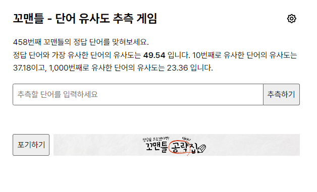

최근에 만든 포트폴리오들을 소개합니다.
작업 목록
1. 리뉴얼 자기소개 사이트
-
새취업을 위해 새로운 프로젝트로 자기소개 사이트를 리뉴얼 하기로 했습니다. 직관적으로 이전의 작품과 비교하여 젝 얼마나 실력이
상승했는지를 보여줄 수 있고, 이전부터 새롭게 만들고 싶다고 생각했거든요.
현재는 작업중...입니다.
기술 스택: HTML, CSS, JS, React, Redux, Next.js
2. 꼬맨틀 개선프로젝트

-
꼬맨틀이라는 HTML, CSS, JS로 만들어진 사이트를 Vue.js 기반으로 리팩터링 개선하는 프로젝트 입니다.
이프로젝트를 통해 React이외에 유명한 프론트엔드 관련 기술을 배우는데 큰 도움이 되었고, Vue.js 특유의
생명 주기에 이해가 생길 수록 다른 프로그램(React)의 라이프 사이클이 왜 그렇게 돌아갔는지 이해가 되는
계기가 되는 프로젝트 였습니다.
기술 스택: HTML, CSS, JS, Pinia, Vue.js
3. yogaAI

-
React, Experss.js와 요가 AI 오픈 소스를 이용해서 만든 요가 코칭 웹 사이트입니다.
이 프로젝트를 계기로 백엔드와 프론트간에 RestAPI 방식의 데이터 교환에 대해서 좀 더 깊은 이해가 되는 계기가 된 프로젝트 입니다.
기술 스택: HTML, CSS, JS, React, express.js